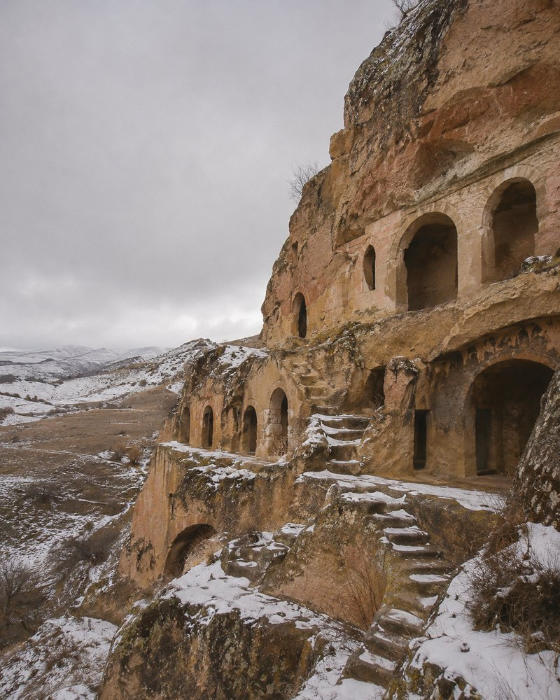

Жесты

1–7 января 2027 года
Новый год Хатия встретила в Удабно, и мама обиделась на неё ещё в ноябре, заранее.
— Ты что, там замуж вышла? — спросила она по телефону тридцатого. — Скажи честно. Я переживу.
— Мама, я никуда не вышла. Мне надо быть здесь.
— Кому надо?
Хатия стояла у окна, единственного места в доме, где ловилась связь, и смотрела на гребень Гареджи. Сказать маме правду она не могла. Правда звучала бы так: девятилетняя глухая девочка нарисовала мне пустой круг и показала, что он придёт и заберёт её. Мама бы не стала спорить. Мама бы сразу приехала, на маршрутке, со всей аптекой в сумке.
— Мне, — сказала Хатия. — Я приеду в конце января. На выходные.
— Ты ела? — спросила мама, и это значило, что она прощает, но не сразу.
Визитка с золотым обрезом всё ещё лежала у Хатии в ящике стола, под тетрадями. Она её не выбросила и сама не знала почему. Иногда вечером открывала ящик, смотрела на неё и закрывала. Как будто проверяла, что он никуда не делся.
Восемнадцатого, в тот день, после уроков, она пошла к Нестан и рассказала ей про рисунок. Нестан выслушала её, не перебивая, и долго перекладывала на столе ручку с места на место.
— Дальше ворот я его не пущу, — сказала она наконец. — Это я тебе обещаю. А за воротами, Хатия, у нас пустыня. Пустыня не моя.
⁂
Ламзира готовилась к Новому году так, будто ждала в гости всё Мулахи. Испекла кубдари, сванские пироги с мясом и луком, три штуки, хотя есть их было некому. Сварила гозинаки: орехи в мёде, разложенные на мокрой доске, чтобы застыли. Хатия резала их ромбиками и таскала обрезки, а Ламзира делала вид, что не видит. Бебия сидела на табуретке и следила за доской с таким лицом, будто орехи в мёде были её личным оскорблением.
В полночь они вышли во двор. Где-то далеко на севере, над Сагареджо, вспыхивали крошечные салюты, беззвучные, как искры от зажигалки. До Удабно не доходило ни звука. Ламзира перекрестилась на эти искры, потом на церковь, потом на Хатию.
— Это чтобы ты в этом году нашла, что ищешь, — сказала она.
— Я ничего не ищу.
— Тогда чтобы оно тебя само нашло, — сказала Ламзира. — Так даже лучше. Меньше ходить.
Утром, в семь, в калитку постучал Джансуг. Он был в чистой рубашке и с бутылкой вина под мышкой.
— Я меквле, — объявил он с порога. — Первый гость. Я у всех в селе меквле, у меня нога лёгкая. Проверено.
— Кем проверено? — спросила Хатия.
— Временем, — сказал Джансуг и прошёл к столу, к кубдари.
Ламзира потом объяснила, что так и есть. Джансуг первым входит в половину домов Удабно, начиная с семи утра, и к обеду его привозят домой на чужой машине. Жена его за это ругает, но на следующий год всё повторяется. Первый гость должен быть добрым человеком, иначе год не задастся. Ругать Джансуга за то, что он добрый, у жены не получается.
Около полудня, когда Джансуга уже увезли, у Хатии зазвонил телефон. Она взяла его со стола, не глядя, и чуть не уронила. На экране было «Папа».
Он не звонил ей с весны. Весной, на день рождения, прислал три слова и торт.
— С Новым годом, — сказал отец. Голос у него был хриплый, как будто он только что вышел с холода. — Ты где?
— В Удабно.
— Мне мама твоя сказала. У тушин, говорит, работаешь.
— У сванов. Тушины только зимой.
— Это хорошо, — сказал отец. — Тушины хорошие соседи. Отец мой с ними работал.
— Я знаю. Их бабушка мне сказала. Что он честно взвешивал.
Отец помолчал. Хатия слышала у него за спиной детские голоса, телевизор и чей-то смех. Наверное, его сыновья. Её братья, которых она видела три раза в жизни.
— Взвешивал честно, — сказал он. — Это да. Ты как? Тебе что-нибудь надо?
Хатия хотела сказать «ничего», как сказала за неё мама. А потом сказала другое, само вырвалось:
— Я учу жестовый язык. Для одной девочки. Она глухая.
Отец молчал так долго, что она решила, что связь пропала.
— Это хорошо, — сказал он наконец. Голос у него стал другой, тише. — Ты у нас всегда всех учила. Маленькая была, бабушку Хаву учила по-грузински. Помнишь?
Хатия не помнила. Она стояла у окна, смотрела на белый гребень и не могла ничего сказать.
— Ладно, — сказал отец. — Связь у тебя плохая. Я ещё позвоню.
Он отключился. Хатия держала телефон в руке, пока экран не погас. Потом пошла на кухню и съела два ромбика гозинаки подряд, хотя совсем не хотела.
⁂
Второго января ночью выпал снег. Не в селе, в селе только побелели крыши. А на холмах Гареджи он лёг ровно, по всему гребню, и утром гребень стоял белый на синем небе, как вырезанный из бумаги. Хатия никогда не видела пустыню под снегом. Она и не думала, что так бывает.
Каникулы шли своим чередом, но она решила, что язык каникул не знает. Майя сказала: если начнёте, не бросайте. Хатия собиралась ходить на кошару через день.
— Пешком? — спросила Ламзира. — По снегу?
— Три километра напрямик. Маико каждый день ездит.
— Маико тушинка, — сказала Ламзира. — А ты в своих ботинках к обеду будешь как Бебия после дождя.
Она ушла в чулан и вернулась с сапогами. Тяжёлыми, кожаными, с высокими голенищами, потёртыми на сгибах.
— Нукри, — сказала она. — Ему уже не надо. Носки надень двое.
Хатия хотела отказаться и не смогла. Сапоги были велики на два размера, и в них она шла, как ребёнок в отцовских. Но ноги остались сухими.
Маико встретила её на полдороге. Хатия вышла из села, поднялась на первый бугор и увидела внизу, в балке, серую лошадь и маленькую фигурку в коричневом пальто. Цеба стояла на тропе и ждала. Маико сидела у неё на спине и смотрела прямо на Хатию, как будто они договаривались о встрече. Они не договаривались. У них не было для этого знаков.
Хатия подумала, что девочка, конечно, знала заранее. Знала ещё тогда, когда Хатия только надевала сапоги. И поняла, что впервые думает об этом спокойно, как о погоде.
⁂
Мзаго первые два раза только смотрела.
Они сидели за столом на клеёнке в синий цветочек, Хатия с телефоном, Маико напротив. Мзаго стояла у печки и делала вид, что занята. То мешала в кастрюле, то перекладывала дрова, то вытирала уже сухую тарелку. На третий день она вытерла одну и ту же тарелку четыре раза. Хатия считала.
На четвёртый день Мзаго села за стол.
— Покажи, как у них «йох», — сказала она.
Хатия нашла в словаре «дочь». Человек на экране, молодой парень в чёрной футболке, сделал знак и замер. Мзаго смотрела на экран, близко, щурясь. Потом подняла свои руки, тёмные, в трещинах, с одним кривым пальцем. Повторила. Руки у неё не слушались, как у Хатии в первый день у Майи.
Маико смотрела на бабушку и вдруг засмеялась. Перегнулась через стол, взяла бабушкины пальцы и повернула их, как надо. Точно так же, как в ноябре поправляла маму в телефоне. Мзаго не обиделась. Она повторила ещё раз, уже правильно, и посмотрела на внучку так, как, наверное, не смотрела ни на кого.
— Свой я тоже оставлю, — сказала она Хатии строго. — Мой знак ей девять лет говорит «йох». Твой пусть говорит снаружи. А мой будет дома.
— Оставляйте, — сказала Хатия. — Так и надо. Мне в Тбилиси так и сказали: пусть будет мост.
— Мост, — повторила Мзаго, как будто пробовала слово на вкус. — Ну пусть мост.
С этого дня они учились втроём. Мзаго запоминала медленно и забывала быстро, но не сдавалась. Хатия запоминала быстрее, но Маико обгоняла их обеих. Майя оказалась права. К седьмому января Маико знала почти шестьдесят знаков, а Хатия едва пятьдесят. Девочка уже поправляла её. Делала это не насмешливо, а терпеливо, как поправляют младших.
Бачо в дом не заходил. Он чинил сетку загона, колол дрова, возился с собаками. Щенок, светлый, лохматый, без имени, ходил за старой собакой по пятам, как привязанный. Бачо всё время оказывался у окна. Хатия видела его тёмное лицо за стеклом, когда поднимала глаза. Он смотрел на руки дочери.
⁂
Однажды Хатия научила Маико знаку «вопрос», а потом знаку «почему».
Объяснить «почему» оказалось почти невозможно. Хатия показывала на снег за окном и делала знак, потом на печку и снова знак. Маико хмурилась. Потом Хатия уронила ложку, нарочно, и показала «почему». Маико посмотрела на ложку, на Хатию, и что-то у неё в лице сдвинулось. Она подняла ложку, положила на стол и сама показала знак «почему». И стала ждать ответа.
Хатия растерялась. Она уронила ложку нарочно, чтобы показать. Как объяснить «нарочно», она не знала. Она развела руками, и Маико засмеялась. Кажется, она поняла и так.
А через полчаса, когда Хатия уже собиралась уходить, Маико взяла её за рукав.
«Мама», — показала она. «Где». «Почему».
Мзаго у печки перестала мешать.
Хатия начала отвечать, медленно, теми знаками, что знала. «Работа». «Деньги». «Далеко». Маико смотрела на её руки внимательно и снова показала «почему». Хатия показала «деньги» ещё раз, и «дом», и «хлеб». Маико покачала головой. Не то. Она спрашивала не про деньги.
Хатия поняла, что спрашивают её о том, о чём девочка девять лет не могла спросить никого. Почему мама там, а не здесь. Почему мама плачет в стекле. Почему у всех мамы есть, а у неё мама в телефоне. Знаков для ответа не было. Хатия подумала, что их, наверное, нет ни в одном языке.
— Скажи ей, — тихо сказала Хатия, не оборачиваясь. — Вы скажите, Мзаго. Своими.
Мзаго подошла, села рядом с внучкой и положила ладонь ей на щёку. Потом себе на сердце. Потом раскрыла её вперёд, далеко. Это был их старый знак, «мама там, болит». Маико знала его много лет. Но сейчас она смотрела на бабушкину ладонь так, как будто видела её впервые. Потом кивнула, медленно. Ответа она не получила. Зато узнала, что вопрос можно задать.
⁂
Во вторник, пятого, Хатия впервые сидела у окна на занятии Майи.
На экране было восемь квадратиков. Отец из Рустави в машине, с выключенным мотором. Мама из Гори на балконе, в пуховике. Ещё одна мама в больничном коридоре, медсестра на ночной смене. Связь у Хатии рвалась, и Майя застывала на экране то с открытым ртом, то с поднятыми руками. Ламзира принесла ей чай и встала за спиной, смотреть.
— Скоро она начнёт думать знаками, — сказала Майя, когда Хатия рассказала про «почему». — Вы это увидите. Однажды увидите, как у неё во сне шевелятся пальцы. У моей мамы шевелились всю жизнь. Я маленькая просыпалась ночью и смотрела. Мама во сне с кем-то спорила.
— А это хорошо? — спросила мама из больничного коридора.
— Это значит, что у ребёнка внутри есть язык, — сказала Майя. — Что он не один у себя в голове. Лучше этого ничего нет.
Ламзира за спиной у Хатии перекрестилась. Хатия не стала спрашивать, за кого.
⁂
Был и другой вопрос, которого Хатия не ожидала.
Шестого, вечером, когда стемнело, Маико вдруг перестала повторять знаки и долго сидела, глядя на Хатию. Не на лицо. Чуть выше, над головой, как смотрела иногда на всех.
Потом показала «я». Потом показала «видеть», знак, который выучила всего два дня назад. Потом сделала свой собственный, бабушкин: ладонь отводит что-то вперёд, в сторону, как отодвигают занавеску. Хатия видела этот знак у Мзаго, ещё в октябре. Мзаго тогда объяснила: «потом». То, что будет потом.
«Я видеть потом», — показала Маико. Потом показала на Хатию. «Ты». «Нет». «Почему».
Хатия сидела не двигаясь. Её как будто облили холодной водой, только изнутри.
Все вокруг говорили, что девочка «слышит». Мзаго говорила: «Знает». Ламзира: «Поставила». А сама девочка, первый раз в жизни получив слова, сказала это по-своему. Видеть. Она видела. Она видела «потом», а Хатия не видела, и Маико не понимала почему. Она, наверное, всю жизнь думала, что другие просто не хотят смотреть.
— Я не знаю, — сказала Хатия вслух. И показала знак «нет» и знак «знать», который неизвестно как удержался у неё в голове. — Я не знаю.
Маико подумала и кивнула. Кажется, этого ответа ей было достаточно. Хуже было бы, если бы Хатия соврала.
Из угла, где Темур смотрел свой маленький телевизор на батарейке, не доносилось ни звука. Хатия обернулась. Темур смотрел не в телевизор, а на них. На руки Маико. Лицо у него было красное, тяжёлое, а глаза испуганные. Он отвёл их сразу.
Темур вернулся из Телави только вчера. Ездил на Новый год к жене, сказала Мзаго, таким голосом, что стало ясно: она в это не верит. Вернулся мрачный, курил за сараем и думал, что никто не видит. Утром Маико показала Хатии про него: «Темур». «Деньги». «Бояться». Раньше она сказала бы только, что над ним тяжело. Теперь она говорила, что именно. Хатия подумала, что это тоже язык. Всё, что раньше было у девочки погодой, теперь получало имена.
⁂
Седьмого, на Рождество, по Удабно с утра ходило Алило.
Дети шли от дома к дому с корзинами и пели, а взрослые давали им конфеты, орехи и мандарины. Впереди шёл Цотне в бурке до пят и в картонной короне, которая всё время съезжала ему на глаза. За ним Гванца с корзиной, строгая, как казначей. Тазо держался за край её куртки. Анано пела громче всех и путала слова. Ламзира насыпала им полкорзины гозинаки, и Цотне попытался взять ещё, пока Гванца не видела. Гванца видела.
Днём Хатия пошла на кошару. Небо было низкое и серое, и к трём часам повалил снег. На этот раз и в балке, и на тропе, и везде. Мзаго посмотрела в окно и сказала, что никуда Хатия не пойдёт.
— Утром пойдёшь, — сказала она. — Ночью в снегу и тушин не найдут. А тебя, кистинка, и днём не найдут.
Хатии постелили у печки, на матрасе и двух овечьих шкурах. В комнате было жарко, пахло дымом, шерстью и сушёной травой. Мзаго с Маико легли на широкой кровати у стены, Бачо и Темур — в другой комнате. Хатия долго лежала, слушала, как трещит печка, как скрипит крыша под снегом, как за стеной вздыхает во сне собака. Потом уснула.
Проснулась она не от звука.
Печь прогорела, в комнате стало темнее, только в окне белел снег и светился ровным светом. На кровати у стены кто-то сидел. Хатия приподнялась на локте.
Маико сидела, накинув на плечи одеяло, и смотрела в окно. Руки у неё были подняты перед грудью и двигались. Медленно, неуверенно, но не останавливаясь. Хатия разглядела в полутьме «мама». Потом «дом». Потом знак, которого не было ни в каком словаре. Маико придумала его сама, ещё в декабре, для неё, для Хатии: будто пишет пальцем мелом в воздухе. Потом «снег». Потом «спать». Потом «нет».
Она ни на кого не смотрела. Ни на бабушку, ни на Хатию. Она говорила сама с собой.
Хатия лежала, не дыша. В горле у неё стало горячо. Майя говорила: однажды вы увидите. Она думала, это будет через месяц, через два. А прошла неделя.
Потом Маико сделала что-то ещё. Нарисовала в воздухе круг и ткнула в середину пальцем. Подержала палец там. И вдруг быстро спрятала обе руки под одеяло, легла, отвернулась к стене и затихла.
Хатия решила, что ей приснилось плохое. Что круг — это из того, декабрьского, и девочка просто вспомнила. Это было понятно. Детям снится то, чего они боятся.
На кровати шевельнулась Мзаго. Она не спала. Хатия видела в снежном свете её открытые глаза.
— С кем она говорит? — шёпотом спросила Мзаго.
— С собой, — шёпотом ответила Хатия. — Так и должно быть. Это хорошо.
Мзаго долго молчала. Потом протянула руку и положила её внучке на спину, поверх одеяла.
— Раньше её было не слышно, — сказала она. — Даже мне.
— Теперь будет слышно, — сказала Хатия.
Она сказала это от радости. Она так и уснула, улыбаясь в овечью шкуру, и до утра ей ничего не снилось.